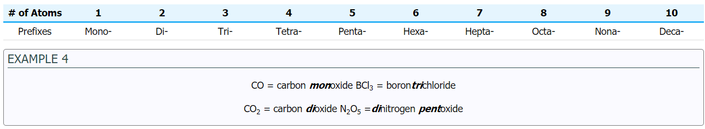

Compounds that consist of a nonmetal bonded to a nonmetal are commonly known as Molecular Compounds, where the element with the positive oxidation state is written first. In many cases, nonmetals form more than one binary compound, so prefixes are used to distinguish them.
The prefix mono- is not used for the first element. If there is not a prefix before the first element, it is assumed that there is only one atom of that element.
© 2020 Quark. All rights reserved. For Educational purposes only.